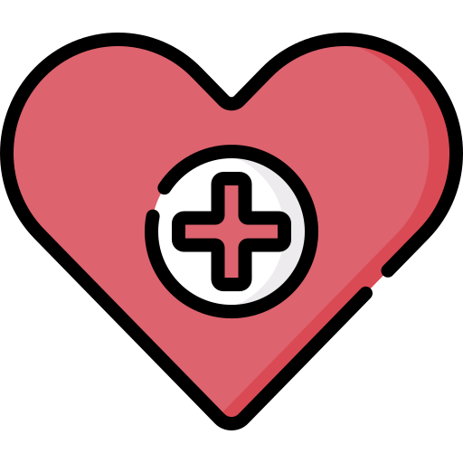

How can I deal with iron deficiency?
What is iron deficiency?
Irony deficiency is common if you get very heavy periods. This is when you have a low amount of red blood cells or not enough haemoglobin (the protein that makes your blood red).
What are the symptoms?
The following signs may be linked to iron deficiency:
- Fatigue
- Hair falling out
- Pale skin
- Irregular heartbeat
- Dizziness or lightheadedness
- Cold hands and feet
- Fragile nails
- Unusual cravings such as ice or dirt
- Poor appetite
Be sure to see a doctor to get tested to see if you have iron deficiency.
Helpful resources
